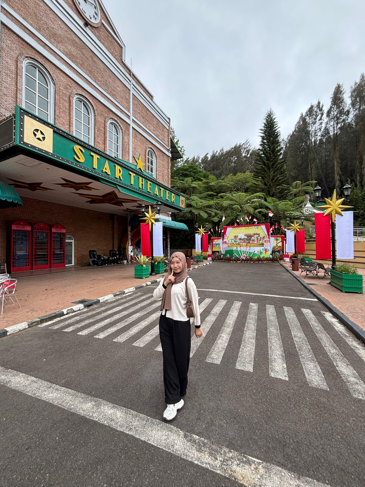

Foto Profil

📝 Tentang Saya
Halo! Perkenalkan nama saya Suhaila Widyaiswara. Saya lahir di
Pematang Siantar pada tanggal 16 Januari 2007. Saat ini saya adalah
seorang Mahasiswi Jurusan Sistem Informasi
di Universitas Muhammadiyah Sumatera Utara.
Saya memiliki ketertarikan dalam bidang teknologi.
Saya selalu berusaha dengan semangat untuk belajar dan memahami hal-hal baru.
📋 Data Pribadi
- Nama Lengkap: Suhaila Widyaiswara
- Tempat, Tanggal Lahir: Pematang Siantar, 16 Januari 2007
- Alamat: Jl. Medan KM 4,5 Simpang Mesjid, Pematang Siantar
- Status: Belum Menikah
- Agama: Islam
- Kewarganegaraan: Indonesia
🎨 Hobi & Minat
- Mendengarkan Musik
- Membaca buku
- Traveling
- Menonton film dan series
🎓 Riwayat Pendidikan
-
SD Muhammadiyah 01 Pematang Siantar (2012 - 2018)
Lulus dengan nilai rata-rata 8.9
-
SMP Negeri 2 Pematang Siantar (2018 - 2021)
Lulus dengan nilai rata-rata 8.8
-
SMAS Tamansiswa Pematang Siantar (2021 - 2024)
Jurusan IPA, lulus dengan nilai rata-rata 8.9
-
Universitas Muhammadiyah Sumatera Utara (2024 - Sekarang)
Jurusan Sistem Informasi, IPK 3.75/4.00
💻 Keterampilan
- Programming Languages: HTML, JavaScript, Python, Java
- Database: MySQL
- Tools: Git, VS Code, Linux
- Languages: Indonesia (Native), English (Advanced)
💼 Pengalaman Akademik
-
Algoritma dan Pemrograman (Python) - Semester 1
Membuat program sederhana pencatatan dan pengelolaan tugas menggunakan Python
-
Struktur Data (VS Code) - Semester 2
Mengimplementasikan struktur data Binary Tree.
-
Teknologi Open Source (Virtual Box) - Semester 2
Mengembangkan web sederhana pada server lokal (client server)
-
Sistem Informasi Manajemen (Draw.io) - Semester 3
Menyusun flowchart, ERD, dan DFD untuk menggambarkan alur kerja, hubungan data, serta proses yang terjadi dalam sistem
📞 Kontak Saya
📱 Social Media
Instagram